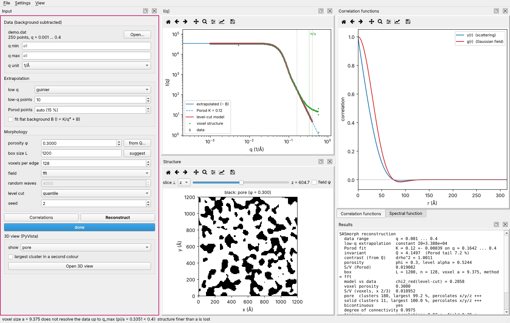
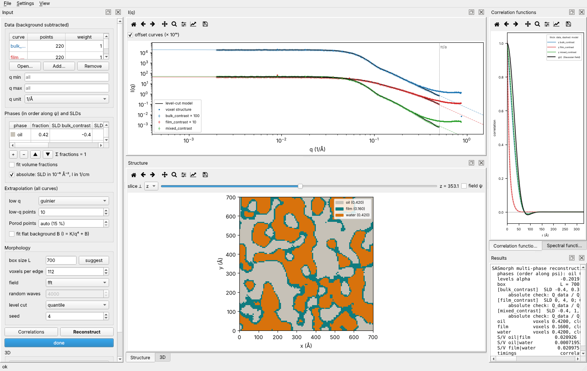
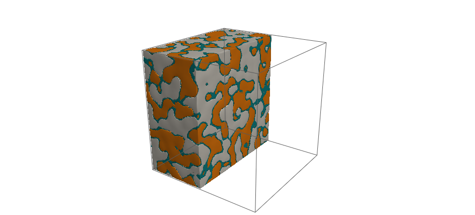
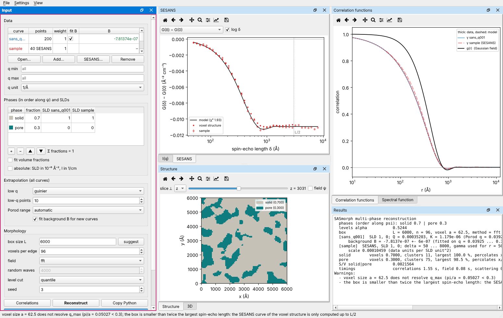
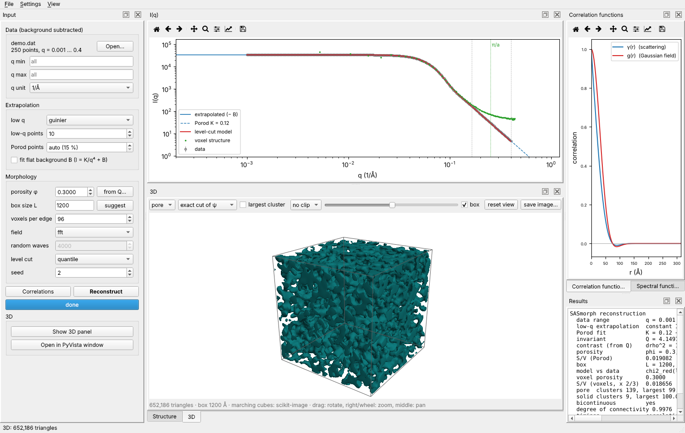

pySASmorph: 3D two- and multi-phase morphologies from SAS data
pysasfit.morph (GUI: pysasfit-morph, launcher tab pySASmorph) builds a representative three-dimensional
two-phase structure whose two-point statistics reproduce a measured SAXS/SANS curve. It is a clean
reimplementation of the method of SAXSMorph (B. Ingham, H. Li, E. L. Allen, M. F. Toney,
J. Appl. Cryst. 44 (2011) 221, doi:10.1107/S0021889810048557), based on the clipped Gaussian random field
of Berk (Phys. Rev. A 44 (1991) 5069) and Quintanilla (Modelling Simul. Mater. Sci. Eng. 15 (2007) S337).

Method
The derivation of every step, with all formulas and the references sorted by topic, is on the page pySASmorph: theory and mathematics.
Extrapolation. The background-subtracted I(q) is extended to q → 0 (Guinier, linear or constant fit to the first points) and to q → ∞ by Porod’s law I = K q⁻⁴, fitted to the last points, optionally with a flat background B (I = K q⁻⁴ + B, B is then subtracted). The invariant is Q = ∫ q² I(q) dq, with the Porod tail K / q_max added analytically.
Debye correlation function γ(r) = (1/Q) ∫ q² I(q) sin(qr)/(qr) dq, γ(0) = 1.
Level-cut inversion. A Gaussian field ψ with unit variance and correlation g(r) is cut at α; phase 2 (“pore”) is ψ > α with volume fraction φ = ½ erfc(α/√2). Its indicator correlation is S₂(r) − φ² = F(g(r)), F(g) = (1/2π) ∫₀^g exp(−α²/(1+t)) / √(1−t²) dt, with F(1) = φ(1−φ) and F(−1) = −φ² (φ ≤ ½). The two-phase relation S₂ − φ² = φ(1−φ) γ(r) gives g(r) = F⁻¹(φ(1−φ) γ(r)).
Spectral function f(k) = 4π ∫ r² g(r) sin(kr)/(kr) dr; the wave-vector magnitudes of the field are distributed as P(k) = k² f(k) / 2π².
Random field and level cut on an n³ voxel grid of edge L.
Checks and statistics: the scattering of the level-cut model and of the voxel structure, both on the absolute scale of the data (contrast Δρ² = Q / (2π² φ(1−φ))); S/V from Porod (π φ(1−φ) K / Q) and from the voxels; clusters, percolation, bicontinuity and SAXSMorph’s degree of connectivity.
Anisotropic samples (uniaxial texture, the axis in the detector plane) are reconstructed from one 2D pattern: pySASmorph: anisotropic data (texture).
Background
Every curve has its own flat (incoherent) background B (Data table, columns fit B and B). New curves get fit B ticked when fit background B for new curves (Extrapolation box, on by default) is ticked.
fit B ticked: B is fitted together with the Porod law, I = K/q⁴ + B, on the Porod range, and the fitted value appears in column B (green; tooltip with the uncertainty) and in the report.
no background: untick fit B and leave B at 0.
set by hand: typing a value into column B, or using the B box above the I(q) plot (arrows or mouse wheel change it in small steps; the plots follow after a short pause) fixes B and switches the fit off. fit next to the box fits it again.
The I(q) plot shows B as a dash-dotted line with its value, the Porod law plus background on the Porod range and the data after subtraction (×). The Porod plot (selector above the plot) shows I q⁴/K against q⁴: a flat background is a straight line 1 + (B/K) q⁴ through the raw data (o), and with the right B the subtracted data (×) lie on the horizontal line 1 – the most sensitive check of B.
Porod range (Extrapolation box), for all curves:
automatic (default): the longest high-q range on which the Porod law (+ B) still describes the data (
auto_porod_range()). Every possible start is tried; a start is acceptable when the fit’s χ² is at most 1.5 times the best one (or ≤ 2 with error bars) and its residuals show no trend. The lowest acceptable start gives the most precise K and B. The range appears in the I(q) and Porod plots and in the report (“auto”).No clear Porod regime: the report warns when
no candidate fits;
the range spans less than a factor 1.5 in q, so K and B cannot be separated;
or the “Porod term” is smaller than B at the start of the range.
last N points or q ≥ q_min: set by hand.
last 15 %: the former fixed default.
A fitted B absorbs part of any deviation from q⁻⁴ near the start of the range; in the tests, a Debye–Anderson–Brumberger curve gives B within 10 %. Check B in the Porod plot, and fix it by hand when you know it, e.g. from the hydrogen content or from a measurement of the incoherent background.
Multi-phase structures and contrast series

The same Gaussian field ψ is cut at N − 1 levels α₁ < … < α_{N−1}: phase i occupies α_i < ψ < α_{i+1}. The phases are ordered: phase i touches only phases i − 1 and i + 1, so a middle phase forms a layer between its neighbours – a surfactant film between oil and water, a shell, a liquid film on a pore wall. The fractions fix the levels, α_k = Φ⁻¹(φ₀ + … + φ_{k−1}). With the SLD jumps Δρ_k = ρ_k − ρ_{k−1} at the levels, Plackett’s identity for the bivariate normal distribution gives the SLD correlation
⟨δρ(0) δρ(r)⟩ = Σ_kl Δρ_k Δρ_l · (1/2π) ∫₀^{g(r)} exp[−(α_k² + α_l² − 2tα_kα_l) / 2(1 − t²)] / √(1 − t²) dt.
One cut is the SAXSMorph relation; a single phase between two cuts is the two-cut model of Berk (1991) and Roberts (1997). The functions are tabulated in θ = arcsin g (the integrand is smooth in θ, its end values are the exact orthant probabilities).
Several curves. Every curve m of a contrast series (SANS contrast variation, SAXS + SANS) has its own SLD set and gives γ_m(r). The common g(r) minimises Σ_m w_m [γ_m(r) − G_m(g)]² at every r, with G_m the normalised model correlation; it is found on a fine g grid, so it also works where G_m is not monotonic. Each curve may be rescaled by a factor λ_m close to 1, because the invariant of a curve that does not reach its Porod regime (the film contrast) is a few per cent off; corrections above 10 % are reported.
Fractions. Normally the composition is known and the fractions are entered. Fit volume fractions adjusts them to the shapes γ_m and to the invariant ratios (curves on one intensity scale) or the absolute invariants (absolute: SLD in 10⁻⁶ Å⁻², I in 1/cm). This information is weak: in the tests the fractions come out within a few hundredths. With absolute the report also compares each invariant with 2π²⟨δρ²⟩ (calibration check).
Results: the phase index of every voxel (VTK, HDF5, TIFF, npy), per curve the model and voxel I(q), per phase the volume, clusters and percolation, and per pair of phases the interface area S/V (direct contacts of non-neighbouring phases appear only where a layer is thinner than a voxel). The 3D panel shows each phase or all; with exact cut of ψ the surface of a middle phase is the pair of level surfaces of ψ.

from pysasfit.morph import DataSet, MultiParameters, reconstruct_multi
from pysasfit.morph.io import load_curve
sets = [DataSet(*load_curve("bulk.dat"), sld=[-0.4, 0.3, 6.3], name="bulk"),
DataSet(*load_curve("film.dat"), sld=[0.0, 4.0, 0.0], name="film")]
p = MultiParameters(names=["oil", "film", "water"], fractions=[0.42, 0.16, 0.42], box_size=700, n=128)
res = reconstruct_multi(sets, p)
print(res.report())
Theory
The multi-phase relations (ordered cuts, Plackett’s identity, joint g(r), fraction fit) are derived in pySASmorph: theory and mathematics, section 9, with the references (Berk, Teubner, Roberts, Arleth et al., Gommes, Kronenberger et al.).
SESANS data

SESANS curves (.ses, SasView v1.0 and Delft formats, read as in pySASstudio) can be added next to the scattering
curves: SESANS… below the Data table or File → Add SESANS data (.ses)…. A dialog shows what the file says
and lets you override the units of the spin-echo length and wavelength and the thickness (some files label them
wrongly). The curves are converted to the length unit of the panel (and read again when the q unit changes). They
need an SLD column in the phase table like every curve.
SESANS only: G(δ) is inverted (Abel transform, regularised) to the correlation function, which enters the fit of g(r) like a scattering curve.
With scattering curves: the SESANS curves fix the large-scale structure, i.e. what the scattering curves miss below their q_min. Each scattering curve is extended to low q by the model of the SESANS g(r) (thick line “low q from SESANS” in the I(q) plot) instead of a Guinier/constant extrapolation; g(r) then follows from the extended curves and the SESANS curves are compared with it.
SESANS panel: measured G(δ) − G(0) (or P/P0 = exp(λ²t G) with λ and t of the file), the model of the common g(r) with its χ², and the SESANS curve of the voxel structure (up to L/2 of the box).
The correlation plot shows the γ of a SESANS curve on its spin-echo range, on a logarithmic r axis.
from pysasfit.core.sesans_io import load_sesans
ses = load_sesans("sample.ses", length_unit="A")
sets.append(DataSet(ses.delta, ses.G, ses.dG, sld=[1.0, 0.0], name="sesans", kind="sesans"))
Theory and the test case: pySASmorph: theory and mathematics, section 9 (SESANS curves).
Differences from SAXSMorph 2.2
SAXSMorph 2.2 |
pySASmorph |
|
|---|---|---|
Fourier integrals |
Romberg on a finite grid; ripple for k > q_max |
exact integrals of the piecewise-linear q I(q) (Filon type); accurate for any r |
Porod tail |
extrapolated numerically up to q = 100 |
integrated analytically to ∞ (sine integral) |
g(r) from γ(r) |
root finding of the level-cut integral |
tabulated F in θ = arcsin g (smooth integrand), monotone inversion; points outside the reachable range are counted and reported |
random field |
sum of 10 000 cosines, |k| by rejection sampling |
default: FFT spectral synthesis on the periodic grid (exact grid statistics, O(n³ log n)); Berk’s random waves still available ( |
porosity |
level α |
level α or the empirical quantile (voxel porosity exact, default) |
validation |
– |
back-calculated I(q) of the model and of the voxels, χ² against the data |
output |
POV-Ray scene |
VTK, HDF5, TIFF stack, npy, STL; 3D panel in the window (OpenGL), optional PyVista window |
Usage
from pysasfit.morph import MorphParameters, reconstruct
from pysasfit.morph.io import load_curve
from pysasfit.morph.export import write_curves, write_matrix
q, I, s = load_curve("sample.dat") # q, I [, sigma]; two-column files are accepted
p = MorphParameters(porosity=0.3, box_size=2000, n=128, porod_points=40, seed=1)
res = reconstruct(q, I, s, p)
print(res.report())
write_curves(res, "sample") # sample_gamma.txt, sample_gr.txt, ...
write_matrix(res, "sample.vtk") # ParaView / PyVista
3D panel

The 3D panel (tab next to Structure) draws the interface with OpenGL (pyqtgraph), inside the window:
phase: pore, solid or both; the largest connected cluster of the phase in magenta;
surface: the exact cut of the Gaussian field (iso-surface of ψ at the cut level: the smooth interface of the model), the voxels smoothed (Gaussian, 0.8 voxel) or the voxels as exported;
clipping plane along x, y or z (the cut is closed), box outline, view reset, image export;
mouse: drag rotates, wheel or right button zooms, middle button pans.
File → Export surface (STL) writes the surface exactly as shown (phase, surface type, clipping); with both
two files _pore.stl and _solid.stl. Marching cubes come from scikit-image when installed (faster), else from
pyqtgraph. The meshes are computed only while the panel is visible; 128³ gives about a million triangles.
Open in PyVista window still opens the same surface in a separate VTK window where PyVista can be installed (standard python.org Python; under MSYS2 there are no VTK wheels).
correlations(q, I, s, p) runs steps 1–4 only (milliseconds) and is what the GUI shows after loading.
porosity_from_invariant(Q, Δρ) gives φ from absolute data. The optional extra pip install -e ".[morph]"
installs pyqtgraph and PyOpenGL (3D panel), h5py and tifffile; .[morph-pyvista] adds PyVista.
Choosing the parameters
Box size L: several correlation lengths;
suggest_boxtakes 5 × 2π/q* (maximum of the Kratky plot). If γ(r) has not decayed at half the box diagonal, a warning is given.Voxels n: the voxel size a = L/n should resolve π/q_max; otherwise the finest structure is lost (warning). 128³ takes well under a second, 256³ a few seconds and about 1 GB of memory.
Porod range: the data must reach a q⁻⁴ regime. A large Porod share of the invariant (> 20 %), K ≤ 0 or no clear Porod regime (automatic range) is reported.
Limits
The reconstruction is one member of the family of structures with the measured two-point function, not the structure. It is meaningful for isotropic, non-periodic two-phase samples with sharp interfaces. A level-cut Gaussian field with g(r) ≈ 1 − b r² has Porod behaviour; data with q⁻³·⁵ or fractal slopes correspond to non-smooth g and are outside the model. If γ(r) leaves the range a level-cut field can reach (reported as clipped points), the porosity or the background is probably wrong.
Validation (tests/morph)
the sine transform is exact for piecewise-linear functions; the Porod tail agrees with numerical integration;
Debye–Anderson–Brumberger data give γ(r) = exp(−r/ξ), Q = π/(4ξ³), K = ξ⁻⁴;
F(1) = φ(1−φ), F(−1) = −φ², F(g) = arcsin(g)/2π at φ = ½;
round trip: g(r) → exact level-cut I(q) → g(r) recovered to 2·10⁻⁴, contrast to 0.1 %;
the FFT field has the prescribed correlation; Parseval for the voxel intensity; S/V of a slab;
end to end (FFT and random waves): voxel porosity, voxel I(q) against the data;
SESANS: exact Abel projection (DAB closed form, pySASstudio’s Hankel transform), inversion, SESANS alone, scattering curve + SESANS (g to 0.04 where the scattering curve alone is off by 0.23), voxel SESANS curve, GUI.